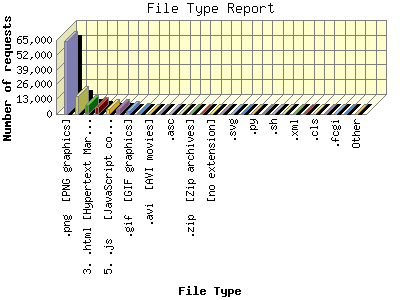

Report generated by Analog 6.0 and Report Magic 2.21
|
Web Server Statistics for "Harish Narayanan (hnarayan) - May 2007" Report generated by Analog 6.0 and Report Magic 2.21 |
The File Type Report identifies the type of information that is requested from the web site. GIF and JPG are the two types of graphic (image) files that are most commonly supported by web browsers. HTML (sometimes abbreviated HTM), ASP, and [directories] all represent actual pages. The number of image requests will almost always outnumber page requests as one page may contain several images.
This report shows all results. This report is sorted by number of requests.

| File Type | Number of requests | Number of bytes transferred | Percentage of the bytes | Percentage of the requests | |
|---|---|---|---|---|---|
| 1. | .png [PNG graphics] | 64,203 | 122.610 MB | 7.71% | 60.14% |
| 2. | .jpg [JPEG graphics] | 16,023 | 323.688 MB | 20.37% | 15.01% |
| 3. | .html [Hypertext Markup Language] | 7,585 | 112.628 MB | 7.09% | 7.11% |
| 4. | .css [Cascading Style Sheets] | 5,987 | 11.001 MB | 0.69% | 5.61% |
| 5. | .js [JavaScript code] | 4,822 | 22.101 MB | 1.39% | 4.52% |
| 6. | [directories] | 4,284 | 28.198 MB | 1.77% | 4.01% |
| 7. | .gif [GIF graphics] | 2,809 | 1.555 MB | 0.10% | 2.63% |
| 8. | .pdf [Adobe Portable Document Format] | 643 | 651.727 MB | 41.01% | 0.60% |
| 9. | .avi [AVI movies] | 90 | 19.005 MB | 1.20% | 0.08% |
| 10. | .mpg [MPEG movie] | 89 | 41.030 MB | 2.58% | 0.08% |
| 11. | .asc | 51 | 56.780 KB | 0.00% | 0.05% |
| 12. | .ppt | 43 | 198.403 MB | 12.48% | 0.04% |
| 13. | .zip [Zip archives] | 18 | 8.928 MB | 0.56% | 0.02% |
| 14. | .ai | 18 | 28.772 MB | 1.81% | 0.02% |
| 15. | [no extension] | 14 | 19.736 KB | 0.00% | 0.01% |
| 16. | .htm [Hypertext Markup Language] | 14 | 1.564 MB | 0.10% | 0.01% |
| 17. | .svg | 11 | 65.384 KB | 0.00% | 0.01% |
| 18. | .tex | 11 | 106.632 KB | 0.01% | 0.01% |
| 19. | .py | 9 | 105.823 KB | 0.01% | 0.01% |
| 20. | .xcf | 7 | 123.249 KB | 0.01% | 0.01% |
| 21. | .sh | 5 | 1.173 KB | 0.00% | 0.01% |
| 22. | .rtf [Rich Text Format] | 3 | 1.802 KB | 0.00% | 0.00% |
| 23. | .xml | 3 | 78.086 KB | 0.01% | 0.00% |
| 24. | .flv | 2 | 311.389 KB | 0.02% | 0.00% |
| 25. | .cls | 2 | 4.160 KB | 0.00% | 0.00% |
| 26. | .psd | 2 | 17.267 MB | 1.09% | 0.00% |
| 27. | .fcgi | 1 | 241.000 B | 0.00% | 0.00% |
| 28. | .old | 1 | 6.336 KB | 0.00% | 0.00% |
| 29. | .db | 1 | 42.000 KB | 0.00% | 0.00% |
| 30. | .txt [Plain text] | 1 | 975.000 B | 0.00% | 0.00% |
This report was generated on June 9, 2007 22:56.
Report time frame May 1, 2007 00:01 to May 31, 2007 23:59.
| Web statistics report produced by: | |
 Analog 6.0 Analog 6.0 |  Report Magic 2.21 Report Magic 2.21 |